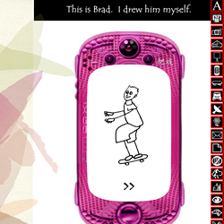

 Kate Pullinger’s Inanimate Alice tells the story of an 8-year old girl in 21st century China searching for her lost father. Through pictures, music, animations, and text, the story walks us through Alice’s life: her hobbies, home, family, and brings us along for the ride when her father goes missing. As the story progresses, we slowly learn slightly ominous details about the situation: her fathers works for an oil company (was he kidnapped?). Alice’s mother is driving very fast at night through a desert (are they running away?). Alice is told to turn her phone off (are they being tracked?). None of these details are fully resolved, as they are learned through Alice’s relatively innocent eyes.
There are many narrative elements we could unpack here, but the interactive elements of the piece are particularly impactful. In order to advance the plot, the reader must click on an arrow. This gives the audience a sense of agency in the story. Although no actual decisions are being made, it feels like you have some control over what is going on.
However, when Alice’s mother tells her to turn off her phone in the middle of the night as they are searching for her father, the interactivity stops, and we lose that feeling of control. The story advances on its own, and we’re left to watch it unfold. Alice’s helplessness in that moment is coupled perfectly with the reader’s lack of control. This lets us empathize with Alice far more. We not only see that Alice is scared and helpless, we feel it too. In this way, Inanimate Alice masterfully uses of interactivity as a genuine literary element.